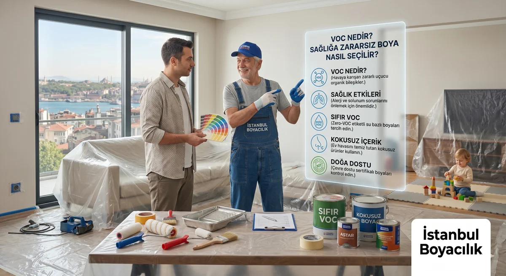

VOC Nedir? Düşük Emisyonlu Boya Nasıl Seçilir?
Güncelleme: 12 Ekim 2026

Boya seçerken VOC içeriği, iç hava emisyonu ve uygulama koşulları birlikte değerlendirilmelidir. Düşük VOC veya az koku, herkes için "sağlığa zararsız" sonuç garantisi değildir.
VOC Nedir?
VOC, uçucu organik bileşiklerin kısaltmasıdır. Boya gibi ürünlerden kullanım ve kuruma sırasında havaya yayılabilirler. Etkileri bileşiğe ve maruziyet koşullarına göre değişir. EPA VOC ve iç hava rehberi bu farkı ve maruziyeti azaltma adımlarını açıklar.
g/l (gram/litre) ürünün VOC içeriğini belirtir; odada ölçülen hava emisyonuyla aynı değer değildir. Tam ürünün kullanıma hazır karışımı için TDS/SDS ve varsa emisyon testini isteyin.
VOC Seviyeleri Nasıl Sınıflandırılır?
Pazarlama dilinde sık kullanılan “düşük VOC” ifadesinin herkesçe kabul edilmiş tek bir sayısal karşılığı yoktur. Karşılaştırma yaparken ürünün kendi teknik veri sayfasındaki beyanı ve aşağıdaki resmî referanslar esas alınmalıdır.
| Referans | Neyi gösterir | Nasıl kullanılır |
|---|---|---|
| Ürünün teknik veri sayfası (TDS) ve güvenlik bilgi formu (SDS) | Ürünün g/lt cinsinden VOC içeriği | Esas alınacak kaynaktır; satın almadan önce isteyin |
| AB 2004/42/EC (Decopaint), Ek II | Kategori bazlı azami VOC içeriği — iç mekan mat duvar ve tavan boyaları için 30 g/l | İlgili AB ürün kategorisinin üst sınırıdır; Türkiye için genel kural veya sağlık eşiği değildir |
| Fransız iç hava emisyon etiketi (A+, A, B, C) | Uygulanmış ve kurumuş üründen iç havaya yayılan kirleticiler için sınıflandırma | İçerik değil emisyon karşılaştırması sağlar; A+ en düşük emisyon sınıfıdır |
Su Bazlı Boya mı, Solvent Bazlı Boya mı?
Su bazlı ifadesi suyla inceltmeyi anlatır; organik çözücü veya VOC bulunmadığını söylemez. AB direktifinin tanımları su ve solvent bazlı kaplamaları inceltme ortamına göre ayırır. İç mekâna uygunluğu, VOC değeri, kuruma ve temizlik koşullarını ürünün kendi föyünden karşılaştırın.
- Su bazlı üründe de etiket ve SDS uyarılarını izleyin.
- Solvent bazlı ürünlerde kullanım yüzeyi ve havalandırma koşullarını ayrıca kontrol edin.
"Zero VOC" ifadesinin hangi ölçüm tanımına ve kullanıma hazır karışıma ait olduğunu sorun; sıfır oda emisyonu anlamına geldiğini varsaymayın.
Çocuk ve Bebek Odası İçin Boya Seçimi
Çocuk odası için ürün ve çalışma planını birlikte değerlendirin:
- VOC içeriğini ve varsa iç hava emisyon beyanını tam ürün ve renk için kontrol edin.
- CE ve EN 71-3 beyanlarını oda havasına ilişkin sağlık garantisi saymayın. AB CE açıklaması ilgili ürün kurallarını; AB oyuncak standartları listesi EN 71-3 için belirli elementlerin göçü kapsamını gösterir.
- Boyama sırasında ve sonrasında güçlü dış hava dolaşımı sağlayın; havalandırma süresini ürünün teknik veri sayfasındaki talimatlara, ortam sıcaklığına ve koku durumuna göre belirleyin.
- Çocuğun odaya dönüşünü boya ve astarın kullanım talimatlarıyla planlayın; kuru görünüm ve koku azalması tek başına yeterli değildir.
Alerjik ve Astımlı Bireyler İçin
Solunum hassasiyetinde boya ürünlerini ve eve dönüş koşullarını hekiminizle değerlendirin:
- Su bazlı, düşük VOC içerikli boya seçin.
- Boyama ve tozlu hazırlık alanından uzak durun; dönüşü ürün talimatları ve kişisel sağlık koşullarıyla planlayın.
- Üreticinin istediği koşullarda dış hava ile havalandırmayı sürdürün.
- Küf varsa önce nem kaynağını giderin, temizlik ve kurutma yapın; küflü veya ıslak yüzeyi boyayla kapatmayın. EPA küf rehberi bu hazırlığı açıklar.
Boyama Sonrası Koku Ne Zaman Geçer?
Kokunun azalması ürüne, kullanılan miktara ve havalandırmaya bağlıdır; her boya için 2–6 saat gibi bir süre verilemez. Koku, tüm emisyonların bittiğini göstermez. Ürünün kullanım ve havalandırma talimatlarını izleyin. Koku gidermek için ek ipuçlarına ulaşmak için boya kokusu nasıl giderilir yazımıza bakabilirsiniz.
İlgili Sayfalar:
Boya kokusu nasıl giderilir? | 2026 ev boyama fiyatları
Aile odaklı bölgelerde hizmet: Kadıköy, Üsküdar, Ataşehir, Bakırköy
Sık Sorulan Sorular
Aileniz İçin Planlı Boya Uygulaması
Ürün seçimi, yüzey hazırlığı ve havalandırmayı birlikte planlıyoruz. Ücretsiz keşif için bize ulaşın.